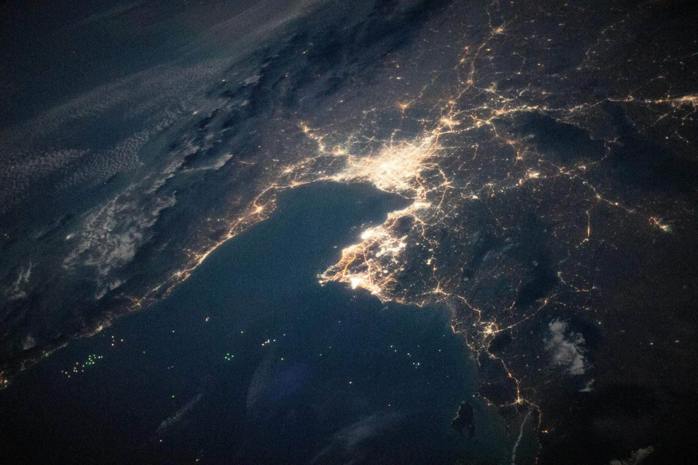
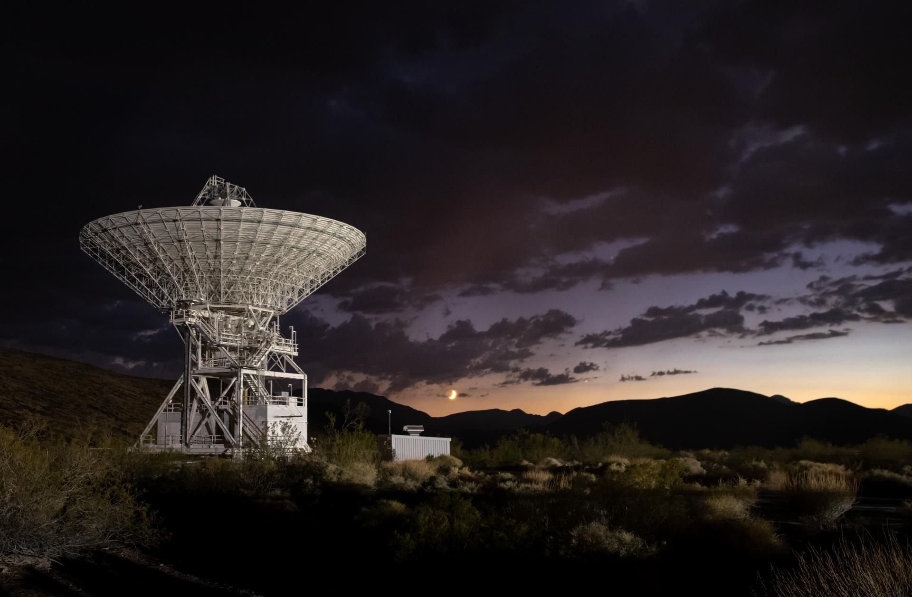
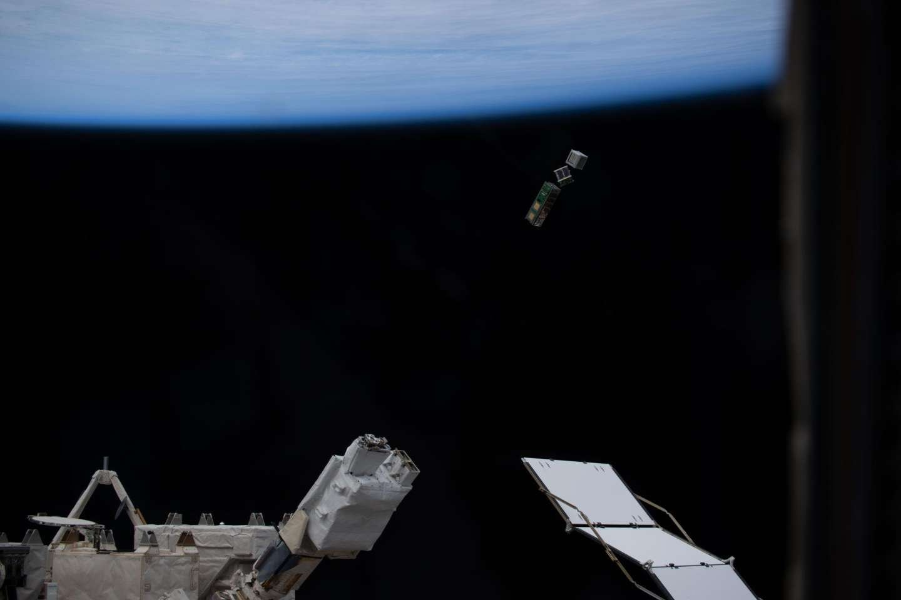
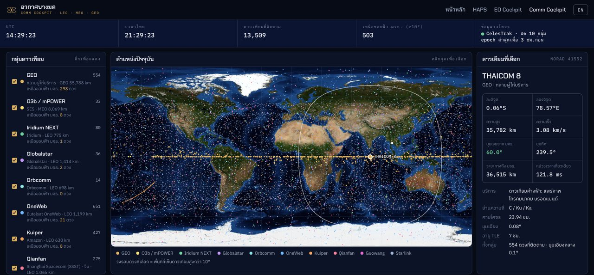
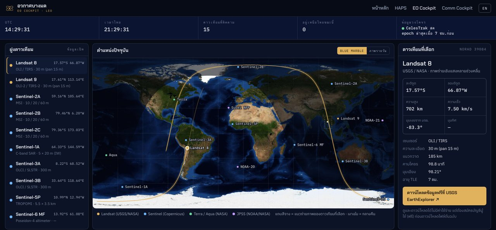
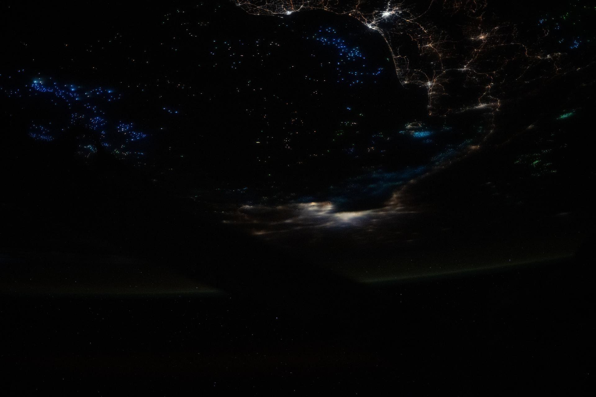
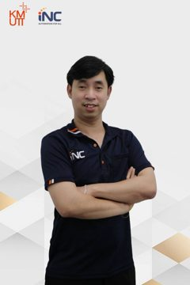

ภาพประกอบสร้างด้วย AI ไม่ใช่ภาพเหตุการณ์จริง
ภาพประกอบสร้างด้วย AI ไม่ใช่ภาพเหตุการณ์จริงSR-1 Freedom: เมื่อทางเลือกเชิงออกแบบกลายเป็นข้อผูกมัด
บทเรียนการบริหารโครงการวิศวกรรมสหสาขาสำหรับวิศวกรไทย จากการล็อกสถาปัตยกรรมภารกิจของ NASA
อ่านต่อ →
อวกาศบางมดเชื่อมงานวิจัยของ มจธ. เข้ากับผู้ประกอบการ ตั้งแต่การสื่อสารผ่านดาวเทียม สถานีสื่อสารบนชั้นบรรยากาศสูง ไปจนถึงดาวเทียมขนาดเล็ก ล่าสุดเราได้รับทุน บพข. พัฒนา HAPS ต้นแบบสัญชาติไทย
ภาพ: กรุงเทพฯ ยามค่ำ จากสถานีอวกาศนานาชาติ 26 ก.พ. 2564 · NASA (iss064e037842)
ภาพประกอบสร้างด้วย AI ไม่ใช่ภาพเหตุการณ์จริงบทเรียนการบริหารโครงการวิศวกรรมสหสาขาสำหรับวิศวกรไทย จากการล็อกสถาปัตยกรรมภารกิจของ NASA
อ่านต่อ →งานของศูนย์เรียงตามระดับความสูง แต่ละระดับมีทีมและโครงการของตัวเอง

ดาวเทียมจะมีประโยชน์ก็ต่อเมื่อสื่อสารกับพื้นดินได้ ทีมจากภาควิชาวิศวกรรมอิเล็กทรอนิกส์และโทรคมนาคม มจธ. วิจัยการสื่อสารผ่านดาวเทียม การใช้คลื่นความถี่ร่วมกันระหว่างดาวเทียมกับ 5G และโครงข่าย 6G แบบอวกาศ–อากาศ–ภาคพื้นดิน
ภาพประกอบ: จานสายอากาศ DSS-15 ขนาด 34 ม. ที่ Goldstone สหรัฐฯ · NASA/JPL-Caltech (PIA26717)
สถานีสื่อสารบนชั้นบรรยากาศสูง (High Altitude Platform Station) ลอยอยู่เหนือเส้นทางการบินพาณิชย์ ทำหน้าที่เหมือนเสาสัญญาณบนฟ้าที่ให้บริการพื้นที่กว้าง โครงการนี้ได้รับทุนจาก บพข. และพัฒนาร่วมกับบริษัท เอแอลที เทเลคอม จำกัด (มหาชน)

ภาพประกอบ: อากาศยานต้นแบบ Helios ของ NASA บินเหนือเกาะคาไว ปี 2546 · NASA (ED03-0152-32)

ดาวเทียมขนาดเล็กต้องชี้กล้องและสายอากาศได้แม่นยำ และต้องมีพลังงานพอตลอดภารกิจ ทีมของเราทำงานด้านระบบควบคุมทิศทาง (ADCS) นำโดย ดร.จิรวิทย์ ปราถน์วิทยา และด้านพลังงานในอวกาศที่ Astronergy Lab นำโดย ผศ.ดร.จักรภพ วงศ์วิวัฒน์
ภาพประกอบ: CubeSat สามดวงที่นักศึกษาทั่วโลกออกแบบ ถูกปล่อยจากสถานีอวกาศนานาชาติ 3 ก.พ. 2569 · NASA (iss074e0301636)
เครื่องมือสองหน้าที่คำนวณตำแหน่งดาวเทียมจากข้อมูลวงโคจรของ CelesTrak แบบเรียลไทม์ เปิดใช้ได้ทันทีในเบราว์เซอร์

ติดตามดาวเทียมสื่อสารแบบเรียลไทม์ ทั้งกลุ่มดาวเทียม LEO/MEO และดาวเทียมค้างฟ้า พร้อมมุมเงยและมุมทิศจาก มจธ. บางมด
เปิด Comm Cockpit →
ติดตามตำแหน่งดาวเทียมสำรวจโลกวงโคจรต่ำที่เปิดข้อมูลและภาพถ่ายให้ใช้ฟรีแบบเรียลไทม์ พร้อมภาพถ่ายล่าสุดเหนือประเทศไทย
เปิด EO Cockpit →ภาพหน้าจอเมื่อ 26 พ.ย. 2569 · ตัวเลขในหน้าจริงเปลี่ยนตามเวลา

ข้อมูลและบริการจากอวกาศมีค่าเมื่อธุรกิจนำไปใช้ได้จริง เราให้คำปรึกษาเชิงกลยุทธ์ อบรมทีมงาน และจัดทำข้อเสนอเชิงนโยบาย เพื่อให้ผู้ประกอบการไทยเข้าสู่อุตสาหกรรมอวกาศได้อย่างมีระบบ
ภาพ: แสงไฟเรือประมงในอ่าวไทย จากสถานีอวกาศนานาชาติ 21 เม.ย. 2569 · NASA (iss074e0536946)
แต่ละกลุ่มเข้ามาด้วยโจทย์ต่างกัน เราจึงแยกเส้นทางให้ชัดตั้งแต่แรก
หัวหน้าทีม · ผู้อำนวยการศูนย์ CISS
หัวหน้า Astronergy Lab
ผู้เชี่ยวชาญนโยบายอวกาศ

ผู้เชี่ยวชาญระบบ ADCS
CISS ร่วมกับภาควิชาวิศวกรรมเครื่องกล ภาควิชาวิศวกรรมอิเล็กทรอนิกส์และโทรคมนาคม มจธ. และบริษัท อินโนว่า เทเลคอมมิวนิเคชั่น จำกัด ในกลุ่มบริษัท เอแอลที เทเลคอม จำกัด (มหาชน)
อ่านต่อ →เปิดตัวทีมงานด้านอวกาศเพื่อขับเคลื่อนงานวิจัยดาวเทียมขนาดเล็กและเศรษฐกิจอวกาศ
ส่งอีเมลสั้นๆ ว่าคุณเป็นใครและกำลังมองหาอะไร ทีมจะติดต่อกลับในวันทำการ